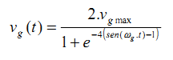

Los aerogeneradores DFIG están diseñados para tener un buen comportamiento cuando el viento muestra ráfagas de viento. Este simulador permite utilizar ficheros de evolución del viento, de los que la instalación incluye los mostrados en la siguiente figura, a los que se accede a través de la opción de menú "Rachas de viento".

Estos ficheros tienen la extensión "*.wgt" y deben estar en el subdirectorio "[DirectorioDeIntalación]\WindFarmSimulator\windgusts". El titulo mostrado coincide con el nombre del fichero correspondiente. El formato de estos ficheros se describe en Creación de perfiles de viento .
Los ficheros de ráfagas de viento que se incluyen en la instalación son casos particulares de la curva estandarizada que corresponde a la formula:

En los gráficos siguientes se muestran dos de ellos. Los ejes de abscisas corresponde con el tiempo, en segundos, y las ordenadas al viento adicional.
|
Esta figura corresponde al fichero "Standard124x4.wgt". La velocidad máxima de cambio del viento es de: 0.22 m/s/ s |
Esta figura corresponde con el fichero "Standard60x10.wgt". La velocidad máxima de cambio del viento es de: 2.8 m/s/ s |
La nomenclatura que se ha utilizado para dar nombre a estas ráfagas de viento están determinadas por los dos números: en "StandardGust100x4" la extensión temporal es de 100 segundos y la amplitud de 4 m/s.

Cuando se selecciona uno de estos ficheros de ráfagas existen dos funcionalidades posibles:
En el modo "Editar" aparece un formulario que contiene dos paneles:

Si se hace click en el botón derecho del ratón aparece un submenu con las siguientes dos opciones:

Si se elige la opción "Añadiendo nuevo punto al Perfil" aparece el siguiente sinóptico en el que podemos introducir los datos del nuevo "punto" (instante de tiempo y valor de viento para ese instante).

El nuevo valor es introducido en la tabla, que se ordena por valor creciente de instante de tiempo. El gráfico también se refresca con los nuevos valores.
Creación manual de un perfile
Se puede crear un nuevo "perfil" de ráfaga de viento utilizando el item "(nuevo)" al pulsar en "Rafagas de viento"
To add a new wind gust profile you have to select "(new)". You will prompted with the following form: